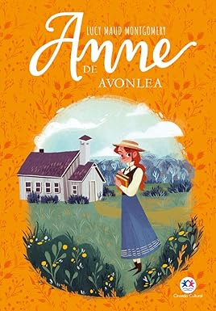

|
 |
Anne II Agora crescida, Anne busca seus sonhos, exerce sua profissão e procura pelo lar perfeito para formar sua família ao lado do amor que a acompanha desde a infância, sempre conquistando amizades por onde passa. Acompanhe a história de Anne Shirley, uma jovem de cabelos ruivos, imaginação fértil e personalidade forte no box com os livros Anne de Windy Poplars, Anne e a Casa dos Sonhos e Anne de Ingleside. |
| ★★★★★ Faixa etária: 12+ R$ 39,90 | |